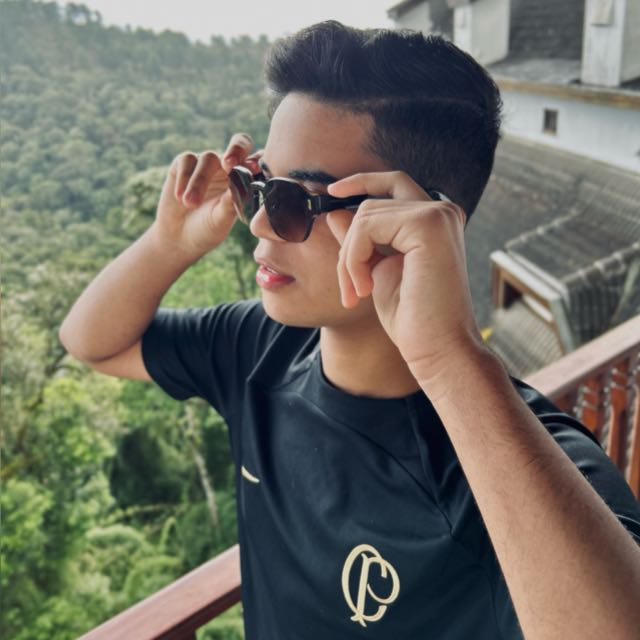

Diego Vilas Boas, foi o orientador desse projeto que foi desenvolvido na disciplina de Tópicos Avançados, que tem como tema principal a ética no nosso cotidiano.
Bianca Alves
Bianca Oliveira Alves, foi a estudante responsável pelas pesquisas sobre os principais casos antiéticos na Luta neste projeto.
Clara Sincler
Clara Sincles de Sousa Campos, foi a estudante responsável pelas pesquisas sobre os principais casos antiéticos no Handebol neste projeto.
Eduardo Gonçalves
Eduardo Gonçalves de Oliveira, foi o estudante responsável pelas pesquisas sobre os principais casos antiéticos nas Paralímpiadas neste projeto.
Gabriela Fernandes
Gabriela Fernandes Cavalcanti, foi a estudante responsável pelas pesquisas sobre os principais casos antiéticos no Vôlei e fez a prototipação deste projeto.

Gustavo Henrique
Gustavo Henrique de Lima Santos, foi o estudante responsável pelas pesquisas sobre os principais casos antiéticos no Futebol e fez a codificação deste projeto.
Kelvinn Camargo
Kelvinn Camargo Felix, foi o estudante responsável pelas pesquisas sobre os principais casos antiéticos no Basquete neste projeto.
Nicolas Petri
Nicolas Vasconcelos Petri Santos, foi o estudante responsável pelas pesquisas sobre os principais casos antiéticos na Natação neste projeto.